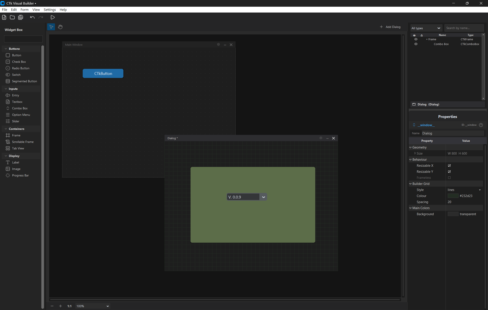
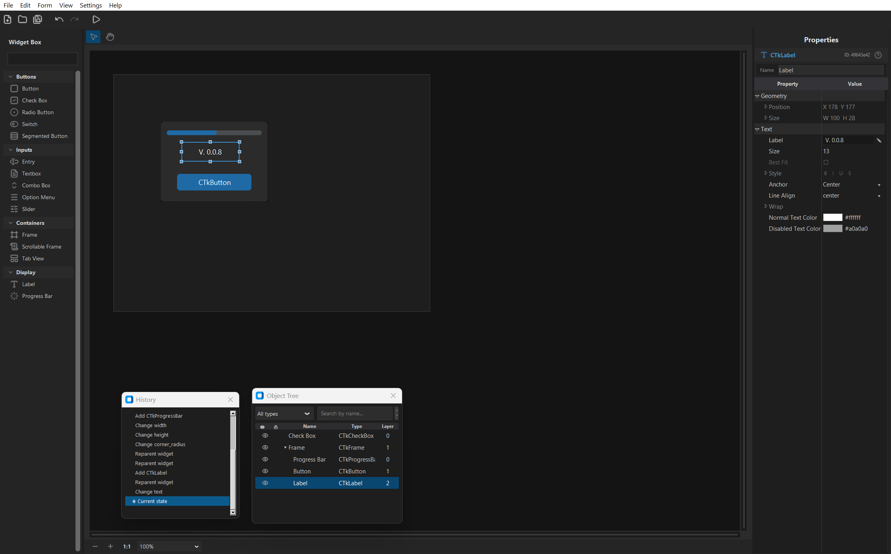
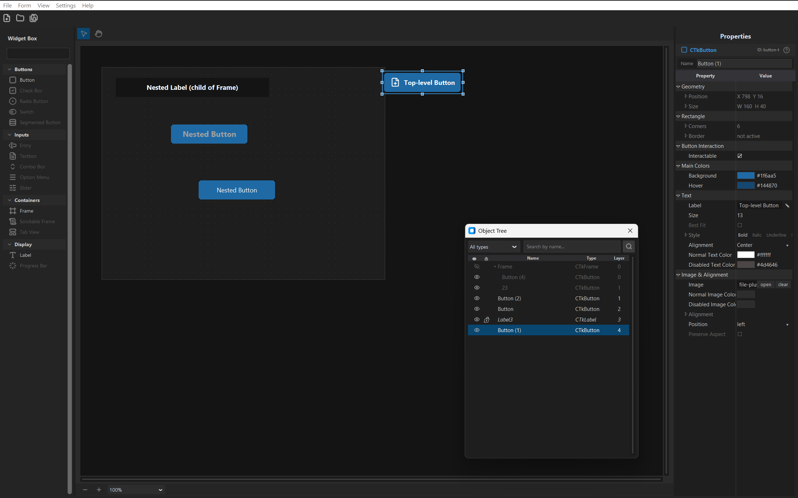
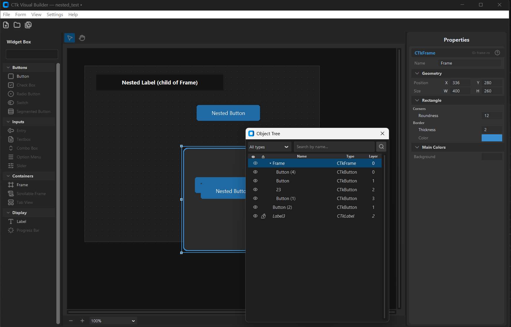

Desktop visual designer for CustomTkinter — drag, drop, edit live, export as Python
View on GitHub
A desktop WYSIWYG designer for CustomTkinter. Drag widgets onto a canvas, edit their properties live in an inspector panel, and export the result as clean runnable Python that renders identically.
Built as a faithful clone of Qt Designer's classic workflow — palette on the left, canvas in the middle,
object tree and properties on the right. No hidden magic: what you see on the canvas is what the exported
.py produces.
Real CTk widgets rendered on a tk Canvas. Drag to move, 8-handle resize, arrow-key nudge, zoom, dot grid, pan.
One .ctkproj holds a main window plus any number of dialogs, all visible on the same canvas with per-form chrome.
Qt Designer-style Vertical / Horizontal / Grid / Group layouts. Child properties collapse into a single stretch field.
Treeview backbone with drag-scrub number rows (Photoshop-style), live color picker with eyedropper, per-type editors.
History panel with live stack view. Every mutation tracked — add, delete, move, resize, property change, rename, reparent.
One click generates a runnable .py file. Preview button spawns it in a subprocess — canvas matches exported output.
Object Tree (F8) with drag-to-reparent, visibility/lock icons, multi-select. History panel (F9) with current-state marker.
CTkButton, Label, Frame, Entry, CheckBox, RadioButton, ComboBox, OptionMenu, Slider, ProgressBar, SegmentedButton, Switch, Textbox, Image.
workspace.py split into a 6-file package as the surface grewctk-tint-color-picker as a standalone PyPI library (v0.3.1)

